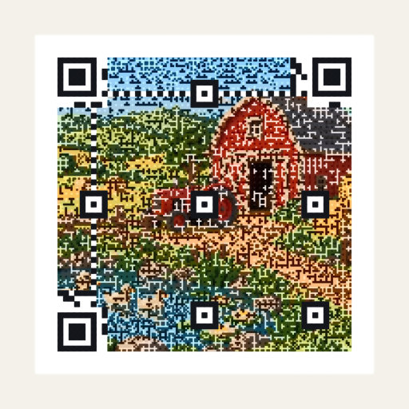
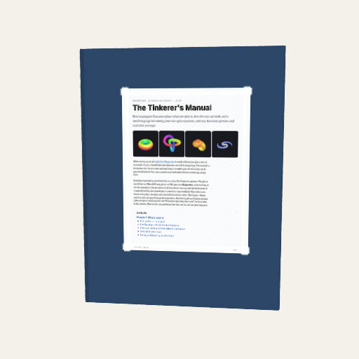

Definitions, derivations, notes, and long tables start folded.
Chapter 9Codes and pages
A code is a picture that stands for bytes. A page is a picture that stands for words. This chapter is about toys that are, in the end, flat: QR codes and other barcodes, the pages of a PDF, a photo, a GIF, and a link. They are made of splats too, and they show a point that Chapters 1 to 5 made in passing: a flat thing made of splats is only useful if every splat stays where the picture needs it. A QR code that scans only some of the time is not a QR code. So the toys here check their own work.
QR codes
What it is. A QR code is a square grid of dark and light cells (modules) that holds a few hundred bytes of text, plus extra data that lets a reader rebuild the text if some cells are damaged. The three big squares in the corners (finder patterns) let a camera find and orient it, and a blank border (the quiet zone) four modules wide keeps the picture from running into whatever is around it.
How Splashery does it. The QR code toy makes a code from a link, plain text, a Wi-Fi network, a contact card, an email, a phone number, a text message, or a map location, and draws it as splats in one of seven styles (Classic, Dots, Rounded, Bricks, Gems, Bubbles, Neon) on a plate of paper, wood, or metal, or on none. The encoding itself is done by Project Nayuki's QR Code generator [20], a small MIT-licensed library that is vendored and loaded only when the toy opens. Splashery asks it for a code and then marks which modules belong to the finder patterns, to the alignment patterns, and to the rest, so each can be built and moved as a piece of its own. A tap bursts the code into its modules, which fall and fly back and land exactly on their grid again; the toy also has an assemble motion, a flip, and an "alive" color wave. Each module moves as a solid tile, and the alive wave keeps the gray values a reader sees unchanged, so every frame of it still scans.
It checks itself. Scan view turns the code flat and square to the camera, and after
every change the toy renders that view and reads it back. The reader is the browser's own
BarcodeDetector when it reads QR codes, and otherwise the vendored jsQR library
(Apache-2.0), loaded the first time a check runs. The result, "It scans," means that one
reader read that one drawing, not that every phone camera will; the text beside it says so.
Nothing leaves the device: no shortener, no network.
Error correction. A QR code carries extra codewords (a codeword is 8 modules) made with a Reed–Solomon code [19]. There are four levels, L, M, Q, and H, which can lose about 7, 15, 25, and 30 percent of the codewords and still scan. That percentage counts codewords, not squares, and the code is cut into blocks that are corrected separately, so damage to the three finder squares, or damage spread over many blocks, can defeat a code that has lost far less than its limit. The toy uses level M by default.
Why these numbers? Contrast, module size, and level M
Our choice, measured The QR standard sets the codes; the limits for splat styles are Splashery's own.
A splat is not a printed square: it is a soft blob, and the blobs of two cells blend a little at their edges. So Splashery measured how much a code can take. The QR scan lab (October 3, 2026) made 3,768 pictures of the toy's codes the way a phone sees them, and read each with two different readers (jsQR and ZXing). Every style read 100 percent of the time at levels L and M. Contrast was reliable from 4 to 1 (a gray code at 4.0 to 1 read 96 to 98 percent of the time) and poor below 3 to 1. A module needs at least 4 pixels on screen, and 6 for the "depth" styles (Bricks, Gems, and Neon). A depth style at version 8 or more (a long text) dropped sharply, to 77 percent for a long text. Light-on-dark codes read on most phone cameras but not on some scanner apps. The toy turns these into a warning and a default; a measured limit is only as good as the readers it was measured with.
Where it lives: the comment and constants at the top of
src/packs/qr.js (eccFor, minContrast,
MIN_MODULE_PX).
Secrets. A Wi-Fi password is never in the toy's options, so never in a shared link or a saved scene: it lives in the page's memory while the page is open.
The QR code toy

A picture woven into a code
More QR toys, and other barcodes
- How a QR code works lights up each part of a real code, or steps through encoding your own text, from the mode bits to the chosen mask.
- The Damage lab lets you scratch a code, stick a label on it, tear or burn a corner, smudge it, or damage its splats (blur, shrink, grow, jitter, fade, drift the colors, curve, tilt, move). A meter reads the very picture on the stage after each change, and counts, block by block, the codewords lost against the ones error correction can fix. Heal it shows the code as a reader read it and lets Reed–Solomon decoding set it right, block by block, until it scans again.
- Three codes in one puts three QR codes in the red, green, and blue of one square, which Splashery's reader splits apart.
- Picture QR weaves a photo into a code as a halftone. The center of each module keeps its bit; the rest of the module carries the picture as dark and light dots by error diffusion, nudged only where a module would misread. The toy measures the contrast and reads the code back with jsQR at phone size and smaller, and offers the closest version that scans when one does not.
- QR from real things builds a code from dominoes that topple into place, marbles that roll into their modules, or tiles that flip over, and ends on a code that scans.
- Other barcodes draws Code 128, EAN-13, and UPC-A with Splashery's own code (check digits and quiet zones included), and Data Matrix and Aztec with ZXing for JavaScript, a vendored library loaded only when the toy opens. A tap sweeps a scanner's red line across, and each bar lifts as it passes.
All of these are on the Studio shelf and behind the labs switch.
A demo goes here later
A small QR code with a damage brush: scratch some modules, and a meter shows how many codewords are lost against how many the code can repair.
Pages, PDFs, and GIFs
What it is. Chapter 5 showed how a recipe places a sheet, a flat place where a picture shows, and how it turns a page. This section is about what the site does behind a sheet.
How Splashery does it. A PDF is drawn page by page by PDF.js [22], vendored and loaded only when someone opens a PDF. A worker turns each page's pixels into splats. Pages stream through a few sheets, so a 200-page book costs the same as its open pages, and a small cache keeps the pages next to the open ones ready. Each sheet is built at about one picture pixel per screen pixel for how big it shows now, on a ladder of widths a square root of two apart, within the device's budget, and is rebuilt when the view comes much closer or goes much further away: so a page you zoom into gets sharper, and a page you leave is freed. A GIF (decoded by omggif, vendored and loaded only for a GIF) or a video is a screen sheet: the splats are built once and take their colors from the sheet's own texture, which each new frame uploads. A PDF's words are available from its text layer, for reading, selecting, copying, and finding, and a link in a PDF is tinted on the page; a link opens only after the site asks you.
The toys on top are Picture lab, Your book (a PDF as a book whose pages turn like paper, and wait until the next page is ready), Photo album, Picture frame, and Screen. They are behind the labs switch.

A PDF page, drawn with splats

Your book
Save PDF goes the other way: from a toy to a page. With the labs switch on, the Share tab can write a PDF of the toy (a still, a link, and a QR code of the link), and, if you choose, a second page with a recording of one tap as a flip book, in which each frame is a hidden button whose look is the picture and the PDF's own JavaScript shows one at a time. A viewer without PDF JavaScript shows the first frame. The file is written by pdf-lib (MIT), loaded only when you export, and is saved to a file you choose.
A Wikipedia book. The rules in Chapter 7 allow a toy that fetches a Wikipedia article when the reader asks for it (its text is CC BY-SA, never stored in the repository, shipped with the site, or saved in a scene, and its credit shows beside it). Such a toy is planned. It is not built yet.
Share links
What it is. A Splashery link is not an address that points at your scene; it is your
scene. It carries the toy's options, the look, the camera, and any paint, written into the
web address after the #, which a browser never sends to a server. The scene is
JSON, compressed with raw deflate and written with the 64 letters, digits, -,
and _ that are safe in an address. A toy at its defaults is a link of about 700
characters; a link stops at 12,288 characters of scene, leaving out paint and then clay
first. A link carries settings, not files: a photo or a splat file from your device
has to be opened again by whoever opens the link.
Where it goes next. A link is text, so it can be a QR code. The share links chapter takes one apart, lets you break one, and counts how many characters a code can hold. Here, notice what codes and pages have in common with links: they all put a lot of meaning in a small, exact picture.
Where to try it
- QR code, How a QR code works, QR damage lab, Three QR codes in one, Picture QR, QR from real things, and Other barcodes (all labs).
- Picture lab, Your book, Photo album, and Screen (labs).